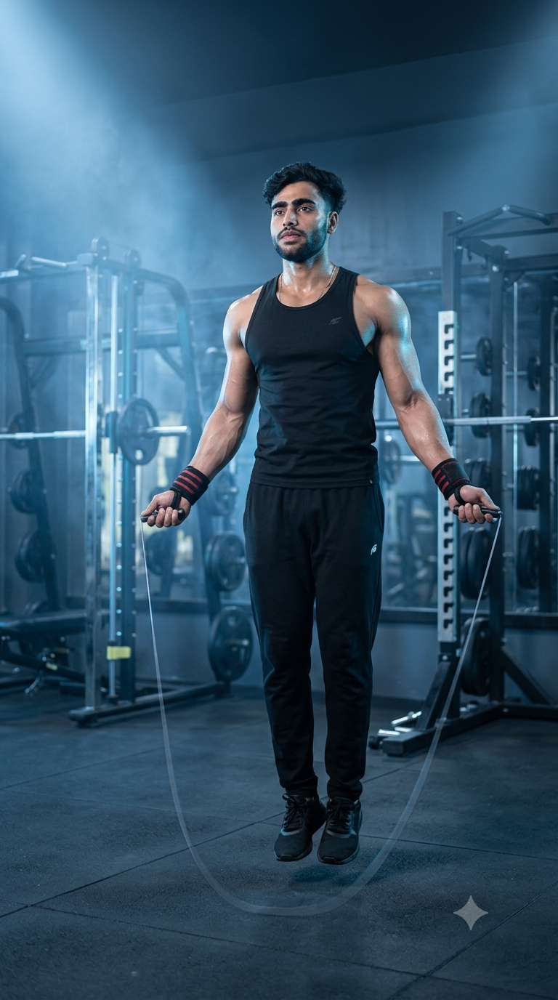

Primary Muscles
Calves & Shoulders
Improve Cardio, Burn Calories, and Build Speed, Coordination & Endurance
Jump Rope is one of the most effective full-body cardiovascular exercises for improving endurance, coordination, agility, and overall athletic performance. This fast-paced bodyweight exercise challenges the calves, shoulders, forearms, core, and cardiovascular system while helping you burn a significant number of calories in a short amount of time. Whether you're warming up before strength training, performing HIIT workouts, enhancing sports performance, or pursuing fat loss, Jump Rope is a versatile exercise suitable for almost every fitness level.

Calves & Shoulders
Jump Rope
Beginner to Intermediate
Cardiovascular Exercise
Discover the primary and supporting muscles activated during Jump Rope. This high-intensity cardiovascular exercise develops lower-body power, shoulder endurance, grip strength, and core stability while improving rhythm, coordination, and overall athletic performance.
The calves generate repeated jumping force while the deltoids keep the shoulders stable and assist in maintaining smooth rope rotation throughout every repetition.
The forearm muscles control the rope with precise wrist movements, helping maintain rhythm, coordination, and consistent rope speed.
These muscles stabilize the hips and knees, absorb landing forces, and provide lower-body strength for efficient, repeated jumping.
The abdominal muscles and hip flexors stabilize the torso, improve balance, and minimize unnecessary body movement to create efficient jumping mechanics.
Discover how Jump Rope improves cardiovascular endurance, burns calories, develops lower-body power, enhances coordination, and builds total-body conditioning through one of the most effective cardio exercises for all fitness levels.
Jump Rope quickly elevates your heart rate, improving heart and lung function while increasing aerobic capacity, stamina, and overall cardiovascular fitness.
Jump Rope is one of the highest calorie-burning cardio exercises, making it an excellent choice for fat-loss programs, HIIT workouts, and metabolic conditioning.
The continuous rhythm between your hands, wrists, and feet develops balance, timing, agility, and body coordination that transfers to many sports and daily activities.
Repeated jumps strengthen the calves, quadriceps, hamstrings, and glutes while improving muscular endurance, explosive power, and landing mechanics.
A jump rope is lightweight, affordable, and easy to carry, allowing you to perform effective cardio workouts almost anywhere with minimal equipment.
Whether preparing for strength training or performing high-intensity interval circuits, Jump Rope increases body temperature, activates the muscles, and enhances overall workout performance.
Follow these step-by-step instructions to perform Jump Rope with proper posture, efficient wrist movement, light jumps, and consistent rhythm for maximum cardiovascular and conditioning benefits.
Stand on the middle of the rope and pull the handles upward. For most people, the handles should reach approximately chest or armpit level. Stand tall with your elbows close to your body.
Using the correct rope length makes learning proper technique much easier.
Begin turning the rope using small wrist circles while keeping your elbows close to your sides. Avoid making large arm movements to maintain efficiency.
Let your wrists—not your shoulders—do most of the work.
Jump only high enough for the rope to pass beneath your feet. Land softly on the balls of your feet with your knees slightly bent to reduce impact.
Small, relaxed jumps are faster and more energy-efficient than high jumps.
Continue jumping with a steady cadence while keeping your chest upright, core engaged, and breathing controlled. Focus on smooth, uninterrupted repetitions.
Consistency is more important than speed, especially when learning.
Gradually decrease your jumping speed before stopping. Walk for a few moments and allow your breathing and heart rate to return to normal before continuing your workout.
Finish every session with a short cool-down to promote recovery and reduce dizziness.
Avoid these common Jump Rope mistakes to improve efficiency, increase calorie burn, and reduce unnecessary stress on your ankles, knees, wrists, and shoulders. Mastering proper technique will help you jump longer with less fatigue.
Excessively high jumps waste energy, slow your rhythm, and place unnecessary stress on your calves and joints, making the exercise more tiring than necessary.
Jump only high enough for the rope to pass beneath your feet while landing softly.
Large arm circles reduce efficiency, tire the shoulders quickly, and make maintaining a smooth rhythm much more difficult.
Keep your elbows close to your body and rotate the rope primarily with small wrist movements.
Constantly looking at your feet encourages poor posture, reduces balance, and can interrupt your jumping rhythm.
Keep your head neutral, chest up, and eyes looking forward throughout the exercise.
Irregular breathing causes fatigue to develop faster, reducing endurance and making it harder to maintain a consistent jumping pace.
Breathe naturally and maintain a steady rhythm that matches your jumping cadence.
Follow these expert coaching tips to improve your Jump Rope technique, increase endurance, develop better coordination, and perform every repetition with maximum efficiency while reducing unnecessary fatigue.
Rotate the rope using small, controlled wrist movements instead of large arm circles. This improves efficiency, reduces shoulder fatigue, and helps you maintain a smooth jumping rhythm.
Fast wrists create smooth rope speed.
Perform quick, low jumps and land softly on the balls of your feet. Efficient jumping conserves energy, protects your joints, and allows you to skip for longer periods.
Small jumps improve endurance.
Position your elbows near your ribs throughout the movement. This shortens the rope's rotation path, improves control, and creates a more efficient skipping motion.
Elbows in, wrists moving.
Master a consistent rhythm before attempting faster skipping or advanced variations. Developing good technique first leads to better endurance, confidence, and long-term progress.
Technique comes before speed.
Progress from learning basic rope control to performing advanced skipping variations by gradually improving rhythm, endurance, speed, and coordination. A structured progression helps maximize cardiovascular fitness while building confidence and efficiency.
Learn proper rope length, wrist rotation, posture, and light single jumps before increasing speed or workout duration.
Rope timing, jumping mechanics, balance, and movement efficiency.
Gradually perform longer sets while maintaining a smooth rhythm and consistent technique to improve aerobic capacity and muscular endurance.
Cardiovascular endurance, rhythm, and exercise consistency.
Introduce alternating-foot jumps, high knees, boxer steps, and faster rope speeds while maintaining control and efficient technique.
Agility, coordination, speed, and movement precision.
Incorporate Jump Rope into high-intensity interval workouts using timed work and recovery periods to maximize calorie burn, conditioning, and athletic performance.
Maximum endurance, fat loss, speed, and overall cardiovascular conditioning.
Find answers to the most common questions about Jump Rope, including muscles worked, calorie burn, workout duration, beginner recommendations, equipment selection, and how to perform the exercise safely for the best cardiovascular results.
Jump Rope primarily targets the calves while also engaging the shoulders, forearms, quadriceps, hamstrings, glutes, and core to maintain balance, posture, and efficient movement.
Yes. Beginners should start with short sessions, focus on mastering proper rope control and light jumps, and gradually increase duration as coordination and endurance improve.
Yes. Jump Rope is a high-calorie-burning cardio exercise that supports fat loss when combined with a balanced diet, regular exercise, and adequate recovery.
Beginners can start with 30 to 60 seconds per set or a total of 5 to 10 minutes. Increase the duration gradually as your cardiovascular fitness and technique improve.
Beginners usually benefit from a lightweight speed rope or a PVC jump rope because they are easier to control while learning proper timing and technique.
Most people can perform Jump Rope three to five times per week as part of a cardio, conditioning, or HIIT program. Ensure adequate recovery if performing longer or high-intensity sessions.
Improve your cardiovascular endurance, coordination, agility, and calorie burn by combining Jump Rope with these effective cardio exercises. Together they create a balanced conditioning program suitable for every fitness level.
Continue building your endurance, burning calories, and improving cardiovascular health with our complete collection of cardio exercise guides. Learn proper technique, muscles worked, training tips, common mistakes, and progression strategies for every fitness level.